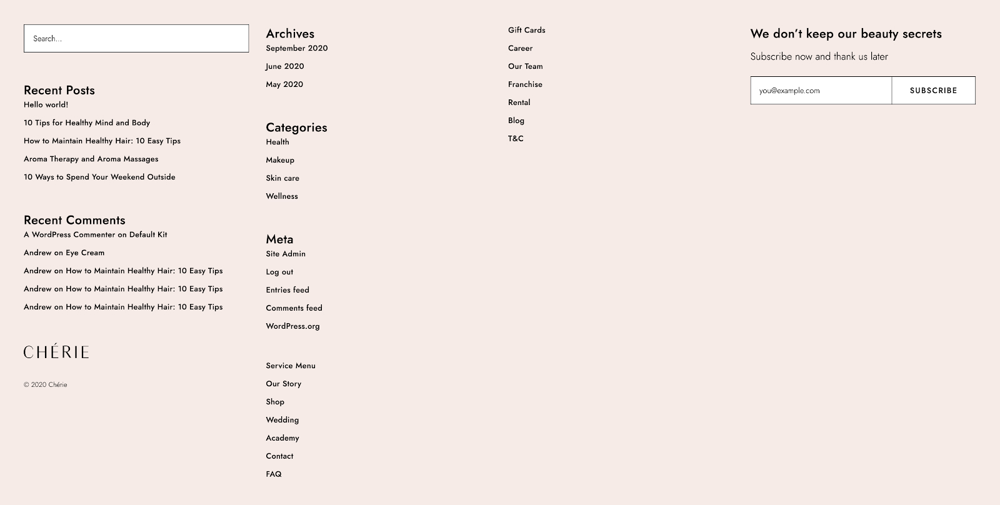
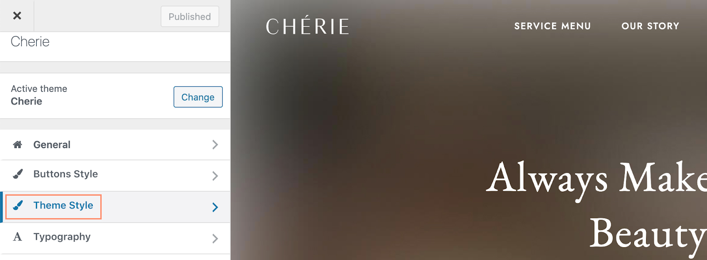
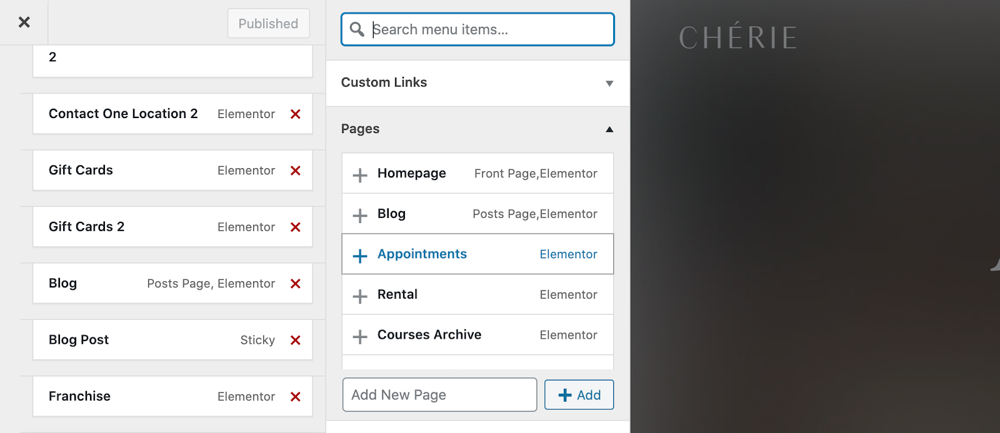
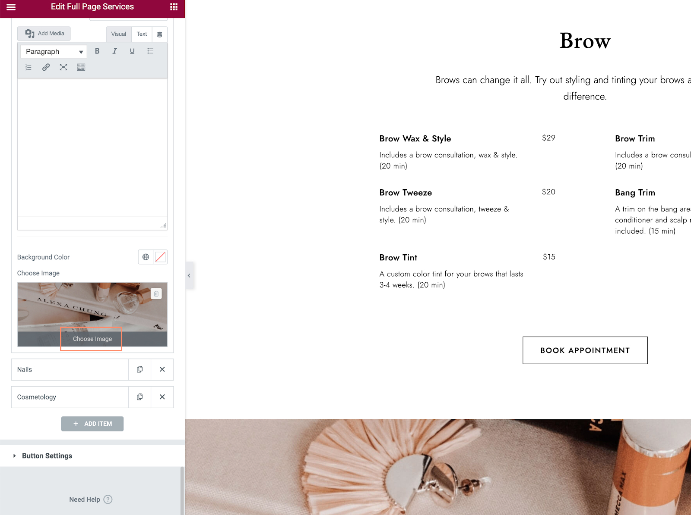
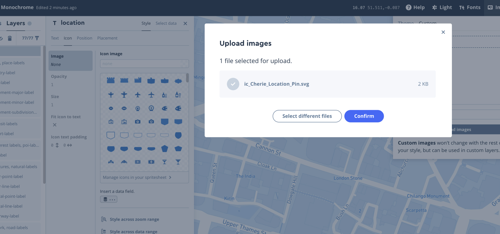
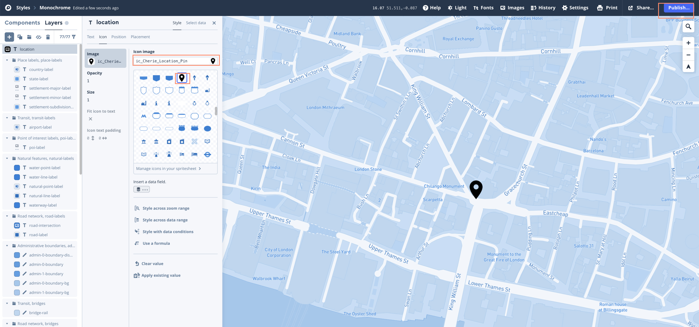

1. Support
Thank you so much for choosing Cherie WP Theme. We have put a lot of effort and love creating it. In this documentation, we have tried to consider all the important details to run your website successfully. In case you have any questions left, please feel free to submit a support ticket here.
Your feedback on our theme is much appreciated. We would love to make our product even better, so please feel free to get in touch with any suggestions for improvement. Thanks again for your support. We value you!
If you like our work, please rate it. If you are going to rate it with less than 5 stars, please let us know the reason first and we will do our best to improve the theme.
2. Theme Installation
After you’ve installed WordPress on your hosting, download the archive with the purchased theme and open your WordPress dashboard.
Go to Appearance > Themes and click on Add New.
Click on Choose File and select the archive with the purchased theme. Click Install Now.
You will see the success message ‘Theme has been installed successfully’, click on the Return to Themes page.
You will see your new theme appear in the dashboard. Press the Activate button on your new theme.

After activation you will be redirected to the ‘Welcome’ page of the theme. Now you need to install all the plugins used in the theme: click on the Install Theme Plugin button.
Select all plugins in the list, choose Select from the dropdown menu and click on the Apply button. Installation process will begin, it might take a couple of minutes, please wait until it's finished.
Once the installation process is finished, you will see a success message ‘All plugins installed and activated successfully’. Click on the Return to the Dashboard action link.
From your admin panel go to Cherie > Demo Install.
You should choose the demo you want to import and use for your theme and click on the Import button.
Demo import can take up to 10 minutes, please wait until it's finished. You will see the success message after the demo is installed successfully.
On the top bar, hover on the ‘home’ icon and select ‘Visit site’ you will see that the demo has been installed.
You may notice that on the homepage instagram widget is not working and that is because you need to add your instagram account in the admin panel. For more details, please see the Instagram section of the documentation.
There also will be a ‘Hello World’ blog post added to your blog. It is blank by default and you can delete it or edit and add the content.
To set up the footer and make it look as it was in the demo preview, go to your Admin Panel > Appearance > Widgets
Delete everything shown on the screenshot below:
The footer on all your pages looks like in demo preview now.
Before:
After:
3. Theme Customization
In your admin panel hover on the home icon and select Visit Site.
On top on the page click on Customize and you will see Customization Panel.
In the Customization Panel you can find settings that will be applied to the entire theme.
Once you have applied any changes you have to click on the Publish button to apply those changes.
3.1 Logo
Go to Customize > General. Here you can upload your logo. We suggest uploading a dark and a light version of your logo.
3.2 Favicon
Go to Customize > General. In this section you can upload a site icon that will appear in the browser tab.
3.3 Button Style
Go to Customize > Button Style. You can change button colors and button text colors in this section.
3.4 Main Theme Colors
Go to Customize > Theme Style. In this section you can change main theme colors.
3.5 Typography
Go to Customize > Typography. In this section you can change fonts and their settings: size, line height, letter spacing, align. From the Font Family dropdown you can select any Google font you like.
3.6 Social Media
Go to Customize > Social Icons. In this section you can set links to your Facebook and Instagram accounts for the social media icons in the header and footer.
3.7 Global Theme Icons
Go to Customize > Global Icons. In this section you can change global theme icons, such as: icons in the subscription form, icons on the shop, etc.
3.8 Header Types
Go to Customize > Header Type. In this section you can change the header of your theme. Just select the option you like more.

3.9 Blog Catalogue Types
Go to Customize > Blog Archive Type. In this section you can choose the Blog Catalogue page layout. There are two different types, just pick the one you like more.
Default Blog Archive type has a featured post on top of the screen on the colored background.
Sticky Blog Archive type has a sticky blog post on the right part of the screen.
3.10 Shop Catalogue Types
Go to Customize > Shop Archive Type. In this section you can choose the Shop Catalogue page layout. There are two different types, just pick the one you like more.
Courses & Career Popup Settings
Go to Customize > Courses & Career Popup Setting. In this section you can apply global settings for all popups on the Courses and Career pages. Fill in the Title, Description and Shortcode for the popup form that you want to display on these pages. Where to find popup shortcodes, please see ‘Popup Setting & Shortcodes’ in the documentation.
3.11 Second Header: Button Settings
Go to Customize > Header Settings > Second Header. In this section you can apply settings for the button on the second header type. You can change the button text and add a custom link to the Button simple link field that will be opened once the button is clicked.
There is also an option to open popup on the button click. You will need to leave the Button simple link field blank and to fill in: Popup title, Popup description if needed and Popup Shortcode. Where to find popup shortcodes, please see ‘Popup Setting & Shortcodes’ in the documentation.
3.12 Menu Settings
Go to Customize > Menus. In this section you set all the menu items you want to appear in the header and footer of your theme.
In the Footer Menu v1 you can select menu items you want to appear in the first column of the footer.
And in the Footer Menu v2 you can select menu items you want to appear in the second column of the footer.
In the Main Menu section you can select pages you want to display in the header of your theme.
In the Mobile Menu section you can select pages you want to display in the header of your mobile version of the theme.
To change menu items in the header you have to select Menus > Main Menu. You will see the list of pages that are displayed in the header menu of your theme.

To change the label of the menu item or to remove it from the header you have to click on the label, e.g. Service Menu. To change Navigation Label, simply type in a new name in the field. And to remove the menu item click on the Remove action link.
To reorder menu items you can drag menu items and drop in the location you want it to appear in the header.
To add other pages to the menu, you need to click on the Add Item at the bottom of the list. You will see another panel on the right. Under Pages label there are all the pages you can add to the menu and they will appear in the header of your theme.
Press on the page name and it will be added to the left panel and appear in the header of your theme.
3.15 Homepage Settings
Go to Customize > Homepage Settings. In this section you can select the page you’d like to be your homepage.
3.16 WooCommerce
Go to Customize > WooCommerce. In this section you can apply some settings to the WooCommerce functionality: add a store notice, change product catalogue settings, product images and checkout.

4. Popup Settings & Shortcodes
To find the shortcode of the popup go to the admin panel of your there. From the left menu choose Contact > Contact Forms.
You will see the list of your contact forms and you can copy the shortcode of each popup from this page.
5. Posts
Go to your admin panel and click on Posts > All Posts. Here you will see the list of all blog posts. To add a new post simply click on the Add New button on top of the screen.
You can choose from two types of the Blog Catalogue page, you can find detailed information in the ‘Blog Catalogue Types’ section of this documentation.
To set up a Sticky post or any other blog post, hover on its name and click on the Edit action link.

For each post you will need to upload a preview image, it will appear on the blog catalogue page. Suggested size of the image is 526px * 700px.
For the sticky post you will also need to add an image that will appear on top of the catalogue page or on the right side of the catalogue page. Suggested image size is 1110px*1110px.
After the changes are applied, click on the Update button on the top right corner of the screen to save and apply all changes.
6. Products
Go to your admin panel and click on Products > All Products. Here you will see the list of all products available in the theme shop. To add a new product simply click on the Products > Add New.

To edit an existing product, hover on its name and click on the Edit action link.
To edit an existing product, hover on its name and click on the Edit action link. For each product you should add its name, description, price, you can also add product categories and tags.
Don’t forget to add product image and images to the product gallery, suggested image size is 1052 by 1400px.

7. Gift Cards
You can add an Electronic Gift card to your products and clients will be able to buy a gift card and send it via email to the recipient.
To add an Electronic Gift card to your products go to Products > Add New. Change Product Data - Simple product to PW Gift Card.
Add all other needed information as for the regular product item.
8. Pages
Go to your admin panel and click on Pages > All Pages. Here you will see the list of all pages in your theme. To add a new page simply click on the Pages > Add New.
To edit an existing page hover on its name and click on the Edit action link. The majority of the pages are created using Elementor page builder. For such pages you should select Edit with Elementor option.
8.1 Homepage
To edit the homepage you have to find it in the pages list, hover on it and click on Edit with Elementor. To change the hero image, click on the Edit icon on the top right corner of your screen.
Select the Style tab in the settings panel on the left of the screen and upload your image to the Choose Image section.
Click on the Select Files button and upload your image. Click on the Insert Media at the bottom of your screen.
After uploading the image or making any other changes, don’t forget to click on the Update button to save the changes.
To edit the Title and Buttons, click on the Content tab in the settings panel. Expand the block you want to edit and apply changes.
Almost each button in the theme has a variety of settings:
- You can change the text on the button.
- There is an option to show a Boxzilla popup which will be opened on a button click. In this case you need to add a shortcode to the input field Boxzilla ID.
- You can select a specific page in the Page Link section and it will be opened on a button click.
- Another option is to show one of two default popups on button click. Add popup image, title, description and popup shortcode. Please see Popup Settings & Shortcodes for more info about shortcodes.

In case if you added a custom link, click on the settings icon on the right of the input field and uncheck the checkbox near Open in New Window.
Once you’ve decided what option to show on the button click, you need to select the corresponding option in the Usage section.
To edit any other section on the page, click on the Edit icon on the left of the section and make changes in the left side panel. Click on the Update button on the bottom of the screen to save the changes.
8.2 Service Menu
To edit the Service Menu page you have to find it in the pages list, hover on it and click on Edit with Elementor.
To change the background image, click on the Edit icon on the left of the block. Select the Style tab in the left side panel and upload your image inseat of the existing one.

To change the title and description, click on the Edit icon on the left top corner of the block, select the Content tab on the left side panel and edit input fields Title and Description.
In order to edit the price list categories, click on the Edit icon on the right side of the block. Select the Content tab on the left side panel and you will see the list of the services. Click on the specific service, it will be expanded and you will be able to edit the information.
In order to change Book Appointment button settings, click on the Button Settings on the left side panel and make all needed changes. Please see section ‘9.Button Settings’ of the documentation for more information.
In order to change the image with parallax effect in the middle of the page, you have to click on the Edit icon on the top right corner of the services section. Expand ‘Brow’ section on the left side panel and scroll to the very bottom of it.
You will see the Choose Image section, upload your image instead of the existing one.
8.3 Wedding
To edit the Wedding page you have to find it in the pages list, hover on it and click on Edit with Elementor.
In order to edit any section on the page click on the Edt icon on the top right corner of the page. On the left side panel you will be able to edit all needed information.
8.4 Contact
To edit the Contact page you have to find it in the pages list, hover on it and click on Edit with Elementor. There are four Contact pages and you can select any of them for your theme: two options for a single address and two options for multiple addresses.

Contact pages are created using Elementor page builder, so all the blocks are editable as usual.
To add your own map from mapbox to the page, click on the Edit icon on the top right corner of the screen, select Style tab. You have to provide an Access token and Mapbox Style link. For more information about mapbox, how to add a marker on the map and where to find Access token and Mapbox Style link, please see section ‘12. Map’ of this documentation.
8.5 Gift Cards
To edit the Gift card page you have to find it in the pages list, hover on it and click on Edit with Elementor. There are two different layouts of the Gift Card page and you can select the one you like more to use in your theme.
By default you will see two types of the gift cards in the theme: physical and electronic. A Physical Gift Card was created as a regular product and an Electronic Gift Card is created as a specific type of the product ‘Gift Card’. Please see the ‘6. Products’ section of this documentation for more information. Before setting up this page, please make sure there are Gift Cards products in the shop.
In order to redirect clients to the Electronic Gift Card product page, once the Shop Now button is clicked, click on the Edit icon on the button block. You will see settings on the left side panel.

Scroll to the very bottom on the left side panel until you see the Gift Card title. In the Gift Cart Title input field you should type in the name of your Electronic Gift Card product, the name should be the same as on its product page. In the Usage section select the ‘Gift Cart’ option. Click on the Update button to save the changes.
9. Button Settings
Almost each button in the theme has a variety of settings:
- You can change the text on the button.
- There is an option to show a Boxzilla popup which will be opened on a button click. In this case you need to add a shortcode to the input field Boxzilla ID.
- You can select a specific page in the Page Link section and the selected page will be opened on a button click.
- Another option is to show one of two default popups on a button click. Add popup image, title, description and popup shortcode. Please see Popup Settings & Shortcodes for more info about shortcodes.
In case if you’ve added a custom link, click on the settings icon on the right of the input field and check or uncheck the checkbox near Open in New Window.
Once you’ve decided what option to show on the button click, you need to select the corresponding option in the Usage section.

10. Mailchimp for WordPress Plugin
First of all, you have to install Mailchimp for WordPress plugin. The author is ibericode. If you have followed our instructions on how to install the theme, all the plugins including this one should have been already installed and activated. Cherie theme is developed using this plugin, however, if you want to use another one, it is fine.
Go to the Admin panel > MC4WP > Mailchimp and provide your API key. If you do everything right, you will see status Connected.

In case if you want to change the appearance of the subscription form, go to Admin panel > MC4WP > Form and change html code.
The form shortcode can be found right underneath the Form code field.
11. Instagram Feed Plugin
First of all, you have to install the Instagram Feed plugin. The author is Smash Balloon. If you have followed our instructions on how to install the theme, all the plugins including this one should have been already installed and activated.
In a separate tab open instagram.com and log in to the account you would like to link.
Go to the Admin panel > Instagram Feed > Settings. Click on the Connect an Instagram Account button.
Select account type you would like to connect and press Connect.
You will see a confirmation popup, click Continue.
Confirm the account you would like to link by clicking on Connect This Account.
You will see a success message ‘Successfully connected’ and username of the account you’ve just connected to your theme. To save these settings click on the Save Changes. All done, go check the homepage and instagram section on it.
12. Map
We care about our clients and use Mapbox maps in our theme because we think it is the best solution on the market for small and medium businesses. It is very easy to customize and mapbox provides a meaningful free tier. Websites with monthly loads up to 50,000 will be able to use mapbox for free unlike Google Maps which are significantly more expensive.
To start setting up your maps you will need to create an account on https://www.mapbox.com/. Open the link and click on Sign Up.
Click on Sign up for Mapbox. Fill in all required fields and press on the Get Started Button.
On your account screen click on Design in Mapbox Studio.
Click on the New Style button.
In the popup choose: Monochrome style and click on Customize Monochrome button. You will see a map and on the left of the screen there is a setting panel. On the bottom of this panel there is a tab Colors and a colored rectangle, click on it to change the main color of your map.
Change default color to the one you need for your theme. We suggest using the following colors:
Beauty Salon Demo #F6EBE7
Nail Salon Demo #F2EEE9
Spa Salon Demo #E5EEF0
Hair Salon Demo #F5E1D3
After a new color scheme has been applied you will need to add marker(s) on your map. Please follow the tutorial on youtube created by mapbox team.
Instead of the marker icon used in the tutorial, we suggest using the icon we designed specially for this theme. Please download it here.
{kind=link}
In case if you find it difficult to create a geojason file and follow further instructions on video tutorial, we tried to make it even simplier. Download geojason file here. Open it in any text editor, you will see that it contains geographical data: longitude and latitude. You need to edit those coordinates: paste coordinates of the location you need to see on the map. First number in the file stands for longitude, the second one — for latitude. You can quickly find geographic coordinates on Google map by right click on the pin. Here is how the geojason file looks like on text editor.
Now you have geojason file with your location coordinates, your map opened in browser. Next step is to open in a new tab mapbox datasets https://studio.mapbox.com/datasets. Click on the button New Dataset, choose Upload tab and drag and drop here your geojason file. Click on Confirm, Create and then on Start Editing button. Please see screenshots for reference:
You will see a map with location point on it, click on the point. See the screenshot below for reference:
Select tab Geojason and you will see a code with geographic coordinates: longitude and latitude, the pin with those coordinates will be shown on your map. Please see screenshot for the reference:
Click on the Save button on top right corner of the screen (only in case youve changed something). Then you need to export your dataset into a tileset, click on the Export button. Please see screenshot for the reference:
Next step is to copy the link to the tileset you've just created, click on the icon shown below:
Go back to your map, select Layers tab and click on the plus icon Add New Layer.
Click on the None Selected under the Source title, paste in the search field link you've copied and you will see the dataset you've just created, click on it.
If you cannot see the dot on the map, click on the Go to Data button on the bottom right corner of the screen:
Now we'll add the location icon to your point on the map. Select type Symbol, to do that choose option shown on the screenshot:
Select tab Style and click on the Manage icons in your spritesheet.

Download the icon we designed specially for this theme here and upload it to your map.
Enter the name of the icon in the search field and select the icon by clicking on it. After this you'll see your icon on the map. Click on the Publish button on the top right corner of the screen.
Your map is ready! Click on the Style on top left corner of your screen.
To add the map you’ve just created to the Contact page you will need map Style URL and Access Token. Click on the Share icon near your map.
You will see a popup where you can find Style URL and Access token. Paste these links to the corresponding fields in the Elementor builder for Contact page. That's it! You are done, check your map on the Contact page.

13. Booked Plugin
If you have followed our instructions on how to install the theme, all the plugins including this one should have been already installed and activated.
Go to Appointments > Settings. Here you can find all the settings for the Booked plugin. Please find detailed documentation on this plugin here.

On the bottom of the screen you will find the color setting for the booking calder which is shown on the Appointments page of your theme. We suggest to change default colors to the following:
Beauty & Nail Salon Demo
light color #f4d8cd
dark color #f4b29a
primary button color #000000
Spa Salon Demo
light color #52adbd
dark color #297f8e
primary button color ##93bed3
Hair Salon Demo
light color #cdc9c5
dark color #b8b4b0
primary button color #000000
14. Contact Form 7
For the detailed information about the Contact Form 7 plugin, please read the official guide here.
15. Multilingual Settings
16. WordPress
Since WordPress is constantly being updated information about how to install WordPress may become out of date, so you can always read the official guide here.
Here you can find some useful links about the WordPress:
WordPress Codex – general info about WordPress and how to install it on your server.
First Steps With WordPress – general information that covers a wide variety of topics.
FAQ New To WordPress – the most popular FAQ’s regarding WordPress.
17. GDPR
We suggest using Complianz – GDPR/CCPA Cookie Consent plugin. Complianz is a GDPR/CCPA Cookie Consent plugin that supports GDPR, DSGVO, CCPA and PIPEDA with a conditional Cookie Notice and customized Cookie Policy based on the results of the built-in Cookie Scan.